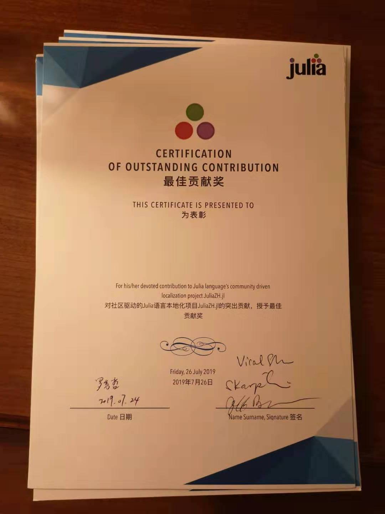

Julia Workshop@Beijing and the Julia Localization Prize
A Julia workshop in China was hosted by JuliaCN in Beijing on Aug 24, 2019. This is the 5th Julia workshop in China hosted by JuliaCN since 2016. We thank the Julia community and our kind sponsors: Colorful Clouds, Microsoft, Swarma club, and SyncedReview. We received over 100 registrations for this event, and roughly 50 offline participants. The online video stream had 1,600 live viewers.
These videos have been uploaded to Bilibili.com, and the related materials are uploaded to JuliaCN/MeetUpMaterials.

Localization Prize
Jeff Bezanson announced the Julia Localization Prize, and each awardee was presented with a certificate of accomplishment signed by Jeff Bezanson, Stefan Karpinski and Viral Shah. The following outstanding contributors also received a cash prize of $150:
- @June-6th (Jun-Jie Cai) and @wood (Wei-ming Zhao): For their outstanding contributions to translation of the Julia documentation, which not only benefits Chinese users, but also helps Korean and other Asian language users through better results from Google Translate.
- @Gnimuc: For his contribution of JuliaCN’s localization infrastructure.
- @Jun (Jun Tian): For his contribution to JuliaCN’s infrastructure including discourse and documentation.
Contributors to the documentation who received the certificate of accomplishment include:
New documentation: @Yoshiera, @woclass, @zhangkaihua88, @zxj5470, @davelet, @shang.zd, @Kyoko_Sakura, @cherichy, @sukanka, @ciaranchen, @lwoo1999
Old documentation: @autozimu, @GaZ3ll3, @morvinzha, @nanxstats, @wlbksy, @sunoru, @XD-DENG, @KDr2, @zhx2013, @dovahcrow, @yuyichao, @yfractal
The certificates have been mailed to the awardees. Please contact @Roger-luo if we missed you!

Talks
- Yingbo Ma, Differential Equations Meets Machine Learning
- Jin-guo Liu, Yao.jl: Quantum Computing Meets Machine Learning
- Yueh-Hua Tu, GeometricFlux.jl: Geometric Deep Learning with Flux
- Thautwarm, MLStyle.jl: The application of advanced functional programming in Julia
- Jiu-ning Chen: Images.jl: image processing in Julia (GSoC 2019)
- 夏恋花火: 5v5 FIRA game in Julia
- Mike Innes: Zygote: Building a Differentiable Programming Language
Survey
We conducted a survey and 36 attendees responded to the survey:
- 15 people just started learning Julia, 15 people start learning Julia after 1.0, 6 people knew Julia before v0.6.
- men:women = 35:1
- bachelors:masters:PhD = 13:15:8 (education background)
- background (number of people)
- machine learning (15)
- finance (5)
- bioinformatics (3)
- computer vision (3)
- others (10)
- 26 people find Chinese discourse useful, 10 people do not use discourse
- 10 people expect more online events, 10 people expect more offline events
Discussion
After the workshop, we discussed how to grow the Julia community in China, and we are planning to do the following:
- regular online talks
- offline hackthons
- beginner projects
- documentation translation
- First Julia PR
- Collecting Good First Issues
- long term mentorship
See you next year in China!